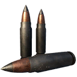

Damage by weapon
Damage per projectile
Each cell is one projectile's damage from that weapon at Q5 (base damage × the weapon's Q5 multiplier; shotguns show pellets × damage); hover a cell for the other qualities. Columns marked Q6 are experimental-only rounds: their cells show the damage from the weapon's experimental version (base × its Q6 multiplier, or its own experimental tuning where it has one), and “–” for weapons without an experimental version, which cannot fire them. Armour and component multipliers are in each round's own section below.
| Weapon | Quality multiplier Q1–Q6 | Q6 version | Full metal jacket | Armour-piercing |
|---|---|---|---|---|
| 0.5 / 0.62 / 0.75 / 0.88 / 1 | No | 27 | 27 |
9x39mm Full Metal Jacket AmmoFull metal jacket
- Stack size
- 240
- Base damage
- 27
- Armour / comp. per shot
- 27 / 27
- Armour mult.
- ×1
- Component mult.
- ×1
- Falloff
- drops to 60% by ~550 m
- Max range
- 1,000 m
The standard round. It does the weapon's full damage to both armour plates and components, so it is the safe all-round choice when you don't know what you'll meet.
Recipe per craft: 4 Explosive, 2 Lead
9x39mm Armor-Piercing AmmoArmour-piercing

- Stack size
- 240
- Base damage
- 27
- Armour / comp. per shot
- 33.75 / 20.25
- Armour mult.
- ×1.25
- Component mult.
- ×0.75
- Falloff
- drops to 60% by ~550 m
- Max range
- 1,000 m
Armour-piercing rounds put more of their damage into armour plates and less into the components underneath. Use them to strip armour off big machines, then switch to a component round for the parts you have exposed.
 DLC Schematic Points
DLC Schematic PointsRecipe per craft: 4 Explosive, 8 Steel
Weapons that use it1 weapon
Where to find it
The crafting schematic of each round, what it costs and what one craft takes:
| Ammo | Crafting schematic | Cost | Recipe per craft |
|---|---|---|---|
| 9x39mm Full Metal Jacket Ammo | Free | 4 Explosive, 2 Lead | |
| 9x39mm Armor-Piercing Ammo | 9x39mm Armor-Piercing Ammo | 2 DLC Schematic Points | 4 Explosive, 8 Steel |
Where ammo comes from:
- Ammo boxes. The map files have 13,420 ammo box spawn points; what a box holds is rolled at random (a crate spawn point: the game may not put a crate on every spot). Ammo boxes on the map
- Destroyed machines drop ammo when you loot their wrecks.
- Crafting. DLC ammo schematics are bought with DLC Schematic Points: “Acquired by crafting DLC items.”
- The Ammo Pack refills ammo; 4 of them are placed by hand in the world. Ammo Packs on the map
- The Salvage skill gives more ammo from every container and machine.
Ammo box counts per region are on the main ammo page.